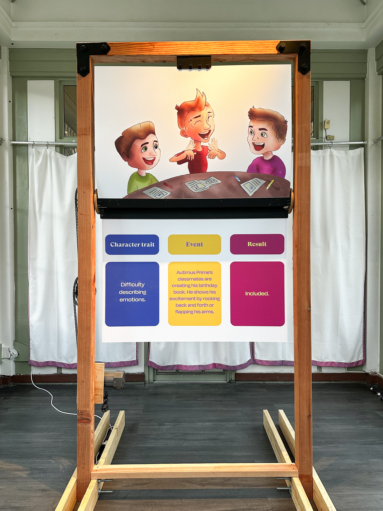
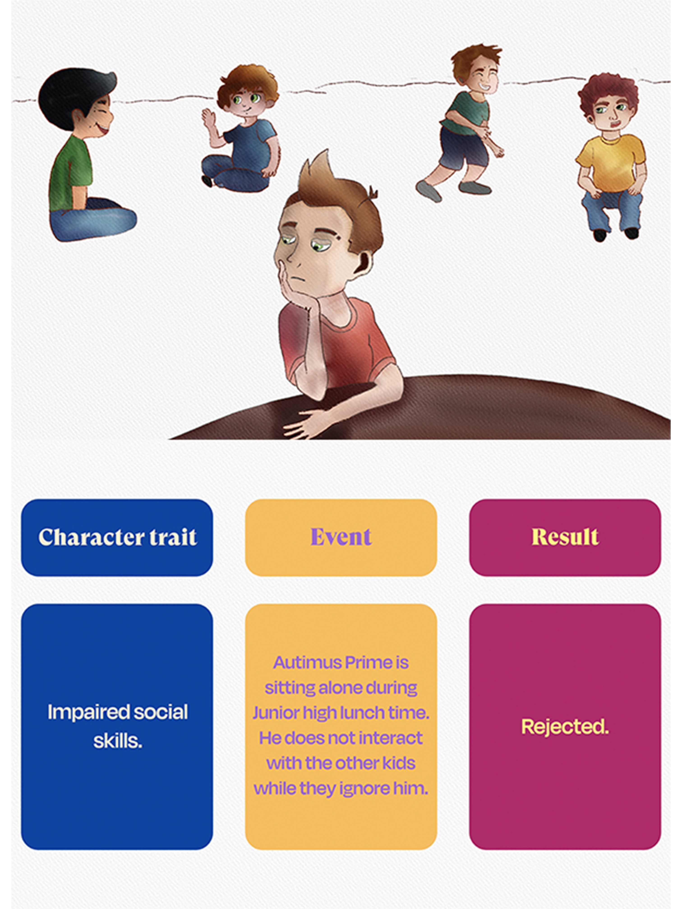
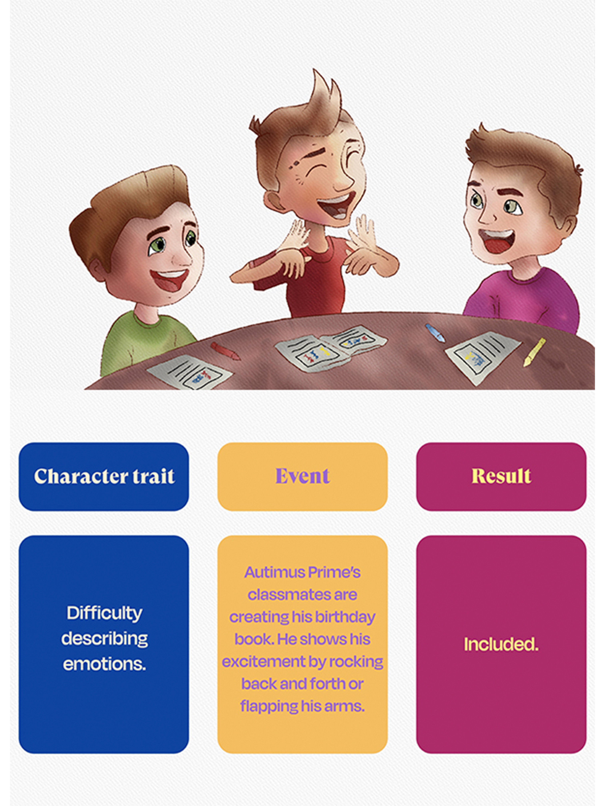
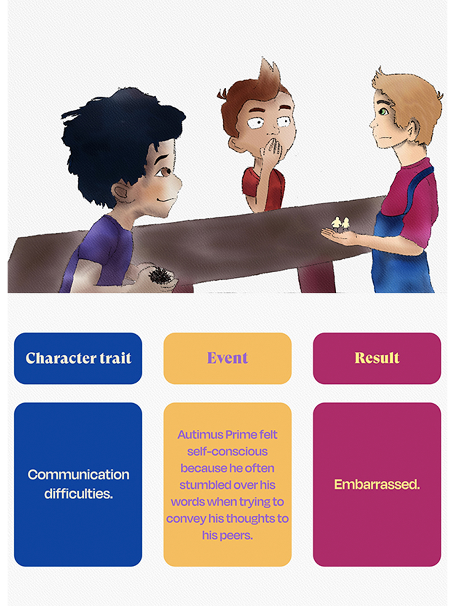
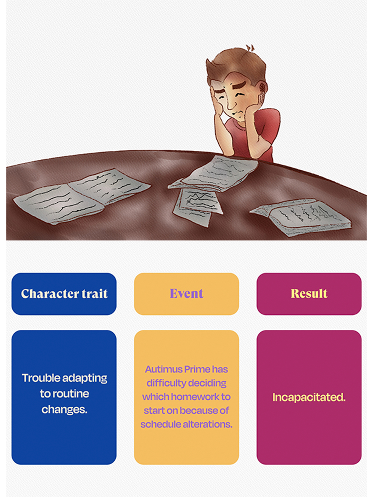

"AUTIMUS PRIME"
2025, wood, printed foam pannels, geared low RPM motor
Neal Raghani’s kinetic sculpture "Autimus Prime" highlights the artist's early life navigating with autism. This 10-foot-tall mechanical storybook is inspired from two significant memories from his formative years: a standard whiteboard used daily versus a "birthday book". A simple whiteboard utilized by his elementary school teacher illustrated each student's daily behavior by categorizing them and placing stars on either the "happy" or "sad" side of the board. If the child did something that displeased her, the star was moved from the 'okay’ to the 'sad side' creating a judgmental environment that discouraged freedom of expression and sense of confidence.
The same teacher developed the annual tradition called the "birthday book" which created a positive experience for the entire class. Each student looked forward to their birthday in anticipation of receiving a "birthday book" dedicated to them with drawings and affirming comments from classmates. This unique exercise cemented a community that understood the hardships of autism and developed an unspoken language that brought happiness and belonging to all. "Autimus Prime" spotlights both the beauty and hardships of autism contrasting Hollywood’s inaccurate portrayal of extraordinary people.
Raghani created 6 drawings reminiscent of his elementary and middle school experiences. 6 text panels also detail the specific traits, experiences, and emotions felt by the artist during his formative years. The 12 panels, which are structured into a giant flipbook, mimic a children's book. One of the most significant memories that the artist experienced from his formative years was when he created his birthday book with his classmates. Overwhelmed with the joy of being with friends celebrating his birthday, he had trouble describing how he felt and, rather, laughed and rocked back and forth. In addition to communication difficulties and anxiety, "Autimus Prime" educates the viewer about the symptoms portrayed by autistic individuals. By doing so, the narratives about autism are dispelled and the line is blurred between those with and without a developmental disability.








